Salut ! Je suis ABE ADOU EMMANUEL
Passionné par l’image et les émotions qu’elle transmet, je capture des instants uniques à travers mon objectif.
Chaque photo raconte une histoire, la vôtre.
Je raconte une histoire visuelle.
Photographe passionné, je capture des instants uniques à travers mon objectif. Entre émotions, lumière et détails, chaque image raconte une histoire.
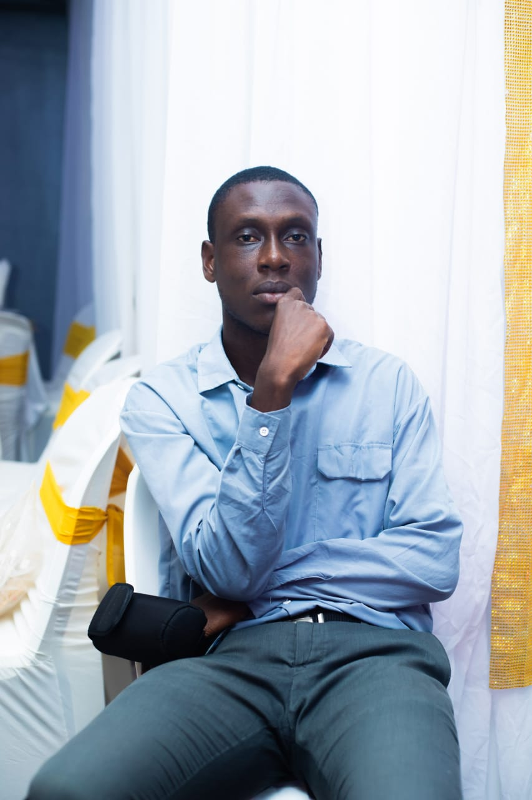
Film de mariage
je capture les émotions les plus sincères de votre journée à travers des vidéos authentiques et intemporelles.
Scéance photo professionnelle
Que ce soit pour événement portrait ou un projet personnel , je réalise des clichés mordernes et authentique qui reflète chaque instant avec émotion
Shooting et retouche
des portraits aux photos artistiques , chaque image est travailée avec soin pour révéler votre beauté et votre personnalité de manière authentique.
Anniversaire et événements
je transforme vos anniversiares et célébrations en souvenirs uniques grâce à des photo et vidéo pleins de vie .
Galerie
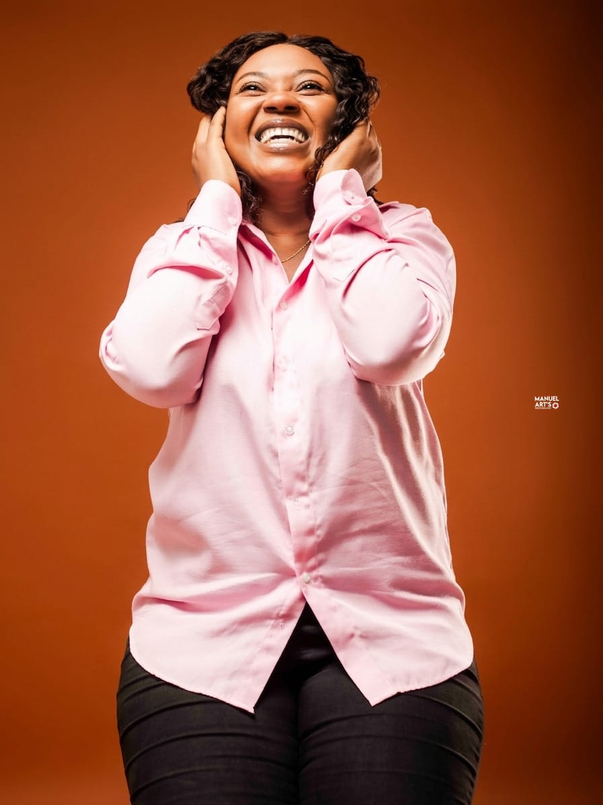
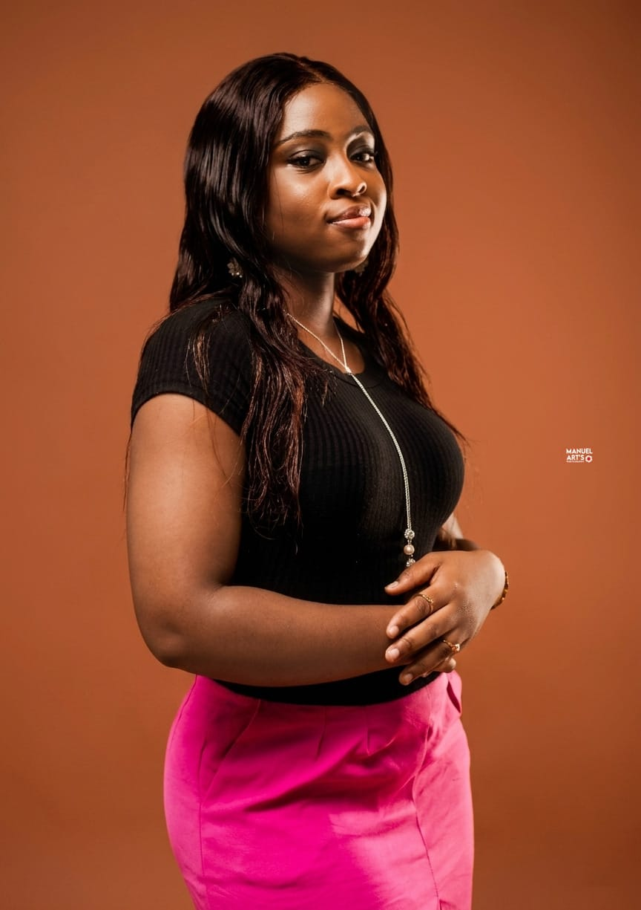
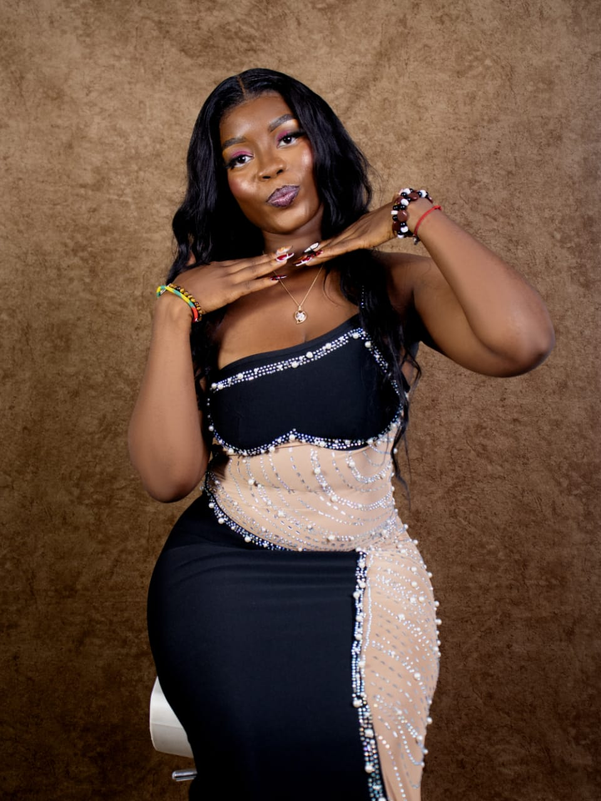
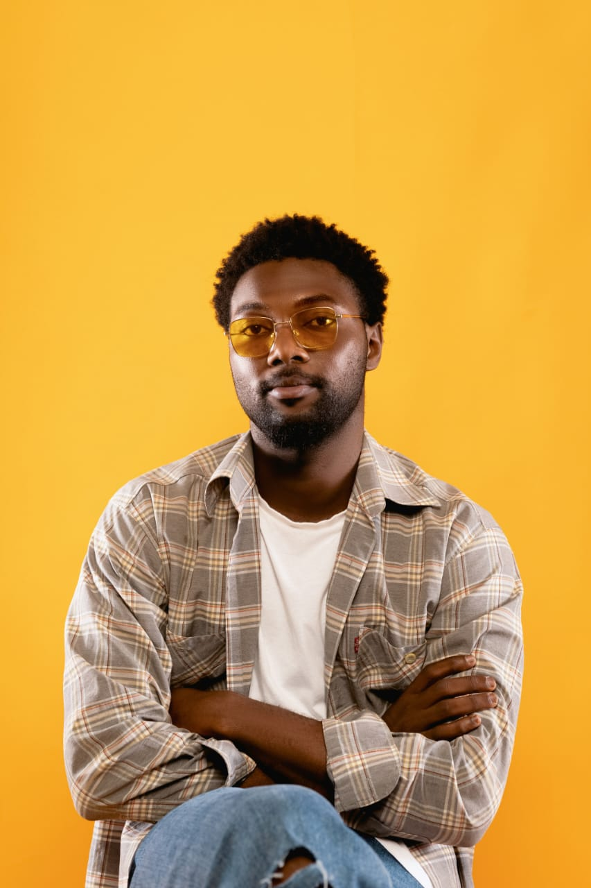
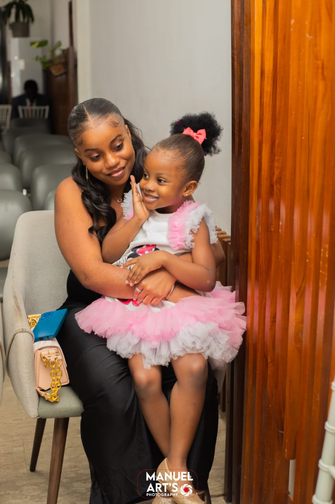
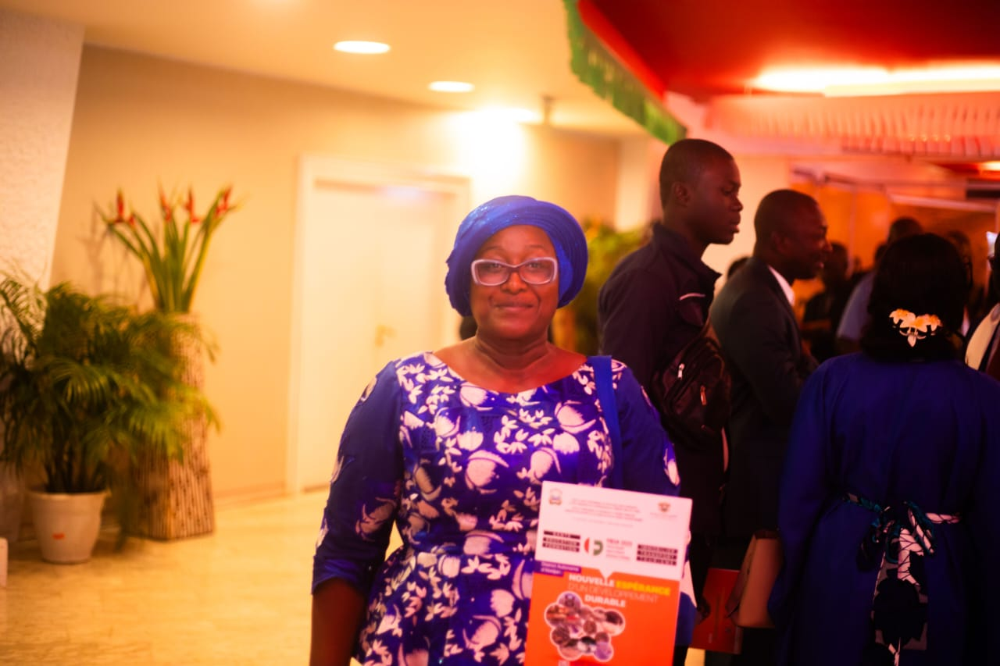
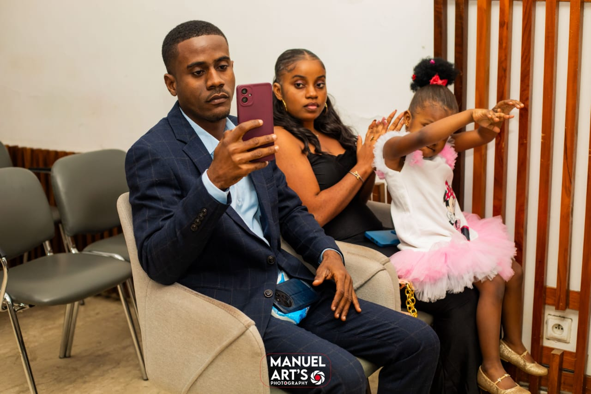
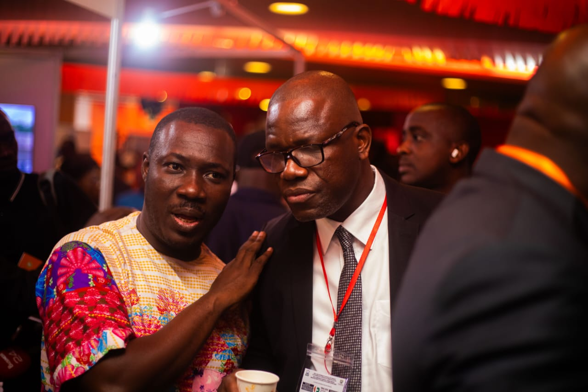
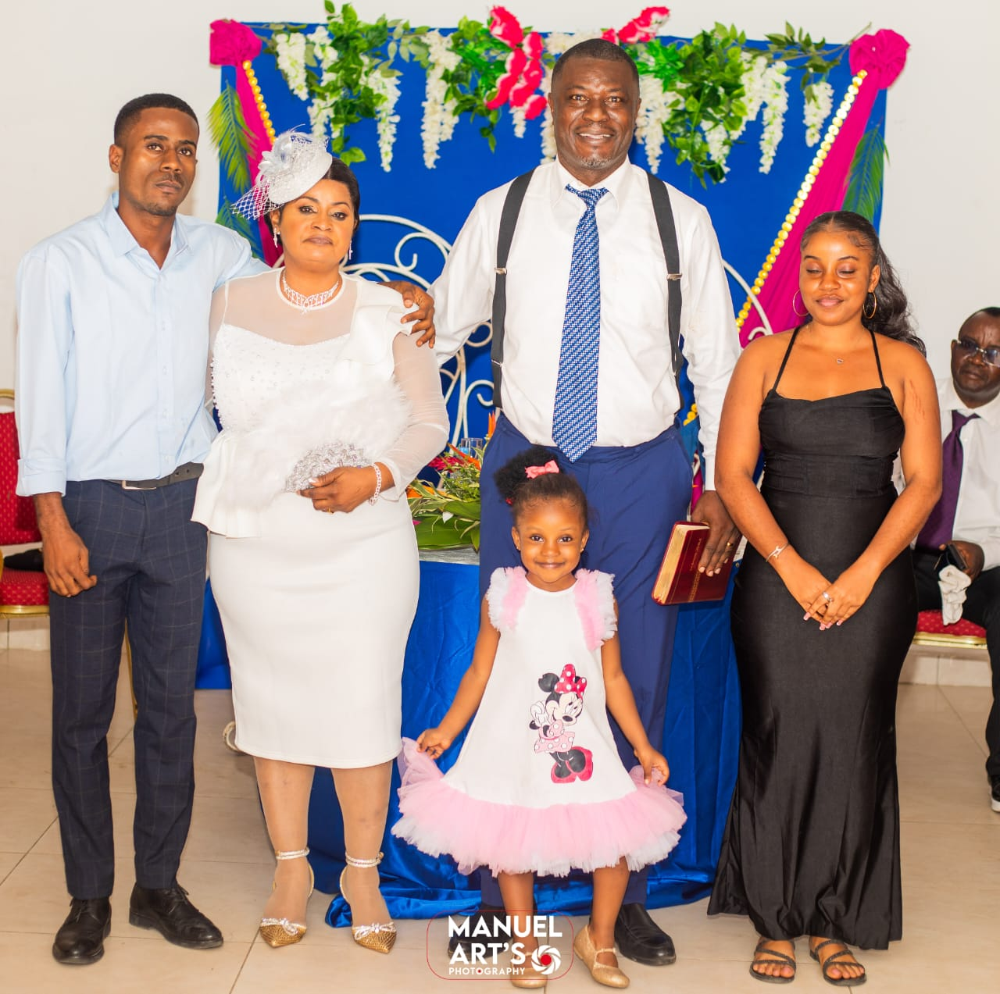
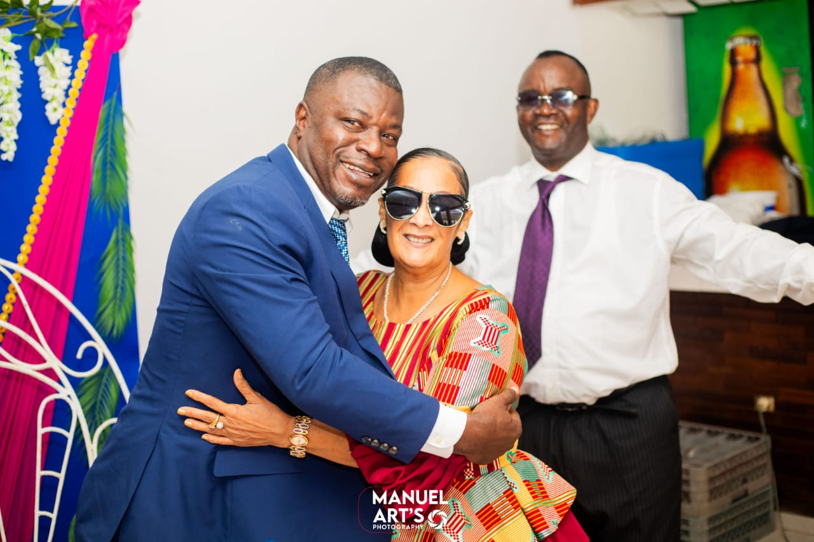
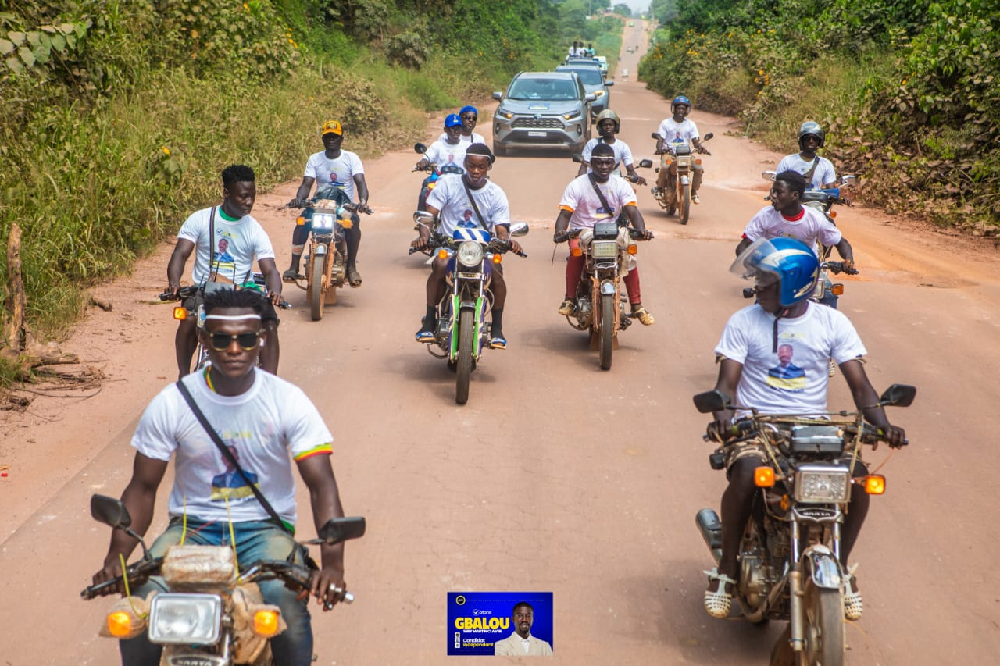
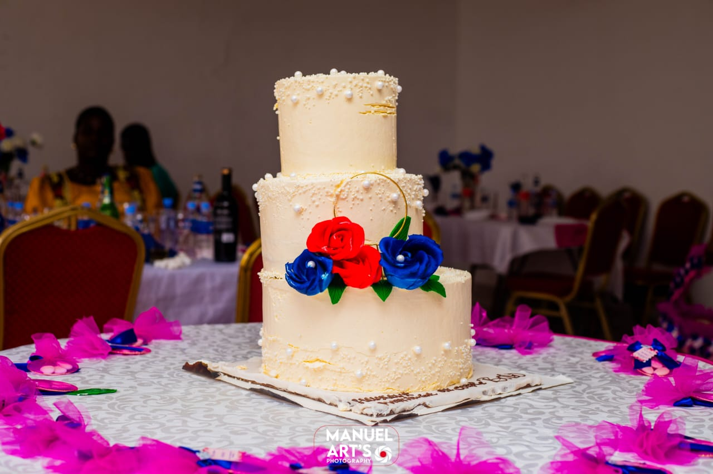
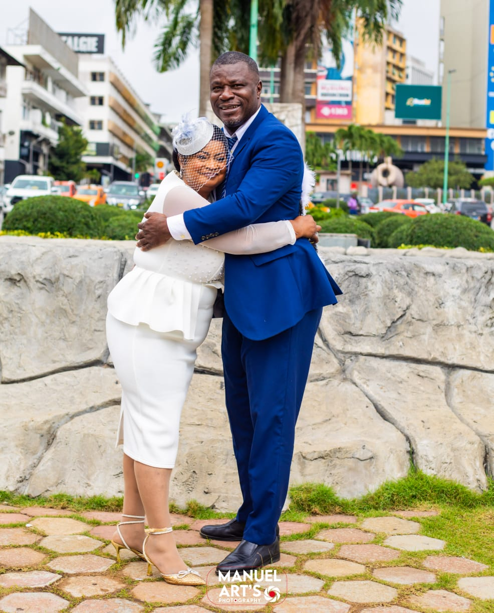